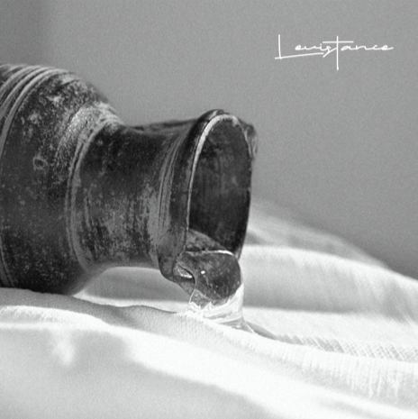

1st album
Nard

Then Mary took about a pint of pure nard, an expensive perfume;
she poured it on Jesus’ feet and wiped his feet with her hair. And the house was filled with the fragrance of the perfume. (John 12:3)
Mary of Bethany brought a jar of pure nard before Jesus. This had been, was and will have been her most prized possession.
She broke the jar and began to pour it on Jesus’ feet. Many showed resentment towards her extravagant action but their criticism did not stop her. This was very easy for her to do as she knew that Jesus Christ was an incomparable, the most beautiful, and the greatest bridegroom. Levistance’s first studio album [NARD] is their pure nard. We infused this album with our confessions and devotions to live as worshippers for the Kingdom of God, keeping the worldy value and success behind us.
The world pushes and demands us to devote our time and zeal to succeed.
The album [NARD] is a resistance against such demands of the world. It is Levistance’s answer to the world’s resentment towards Mary’s extravagant devotion.
This collection of 12 original songs is our declaration that there is no shame and waste in the offering of our lives, broken and poured out on the feet of Jesus.
Divine extravagance and extreme worship. This is the spirit of Levistance. The fragrance of the album [NARD] poured out on Jesus’ feet will awaken the next genera- tion all over the nations. We pray that all who listen to this album will rise as armies of holy brides of Christ.
Resist the world and their culture with prayer and worship! This is Levistance!
I am LEVISTANCE, You are LEVISTANCE, We are LEVISTANCE!
The world pushes and demands us to devote our time and zeal to succeed.
The album [NARD] is a resistance against such demands of the world. It is Levistance’s answer to the world’s resentment towards Mary’s extravagant devotion.
This collection of 12 original songs is our declaration that there is no shame and waste in the offering of our lives, broken and poured out on the feet of Jesus.
Divine extravagance and extreme worship. This is the spirit of Levistance. The fragrance of the album [NARD] poured out on Jesus’ feet will awaken the next genera- tion all over the nations. We pray that all who listen to this album will rise as armies of holy brides of Christ.
Resist the world and their culture with prayer and worship! This is Levistance!
I am LEVISTANCE, You are LEVISTANCE, We are LEVISTANCE!
마리아는 지극히 비싼 향유 곧 순전한 나드 한 근을 가져다가 예수의 발에 붓 고 자기 머리털로 그의 발을 닦으니 향유 냄새가 집에 가득하더라 (요 12:3)
베다니 마리아는 옥합에 담긴 순전한 나드 한 근을 예수님 앞으로 가져왔다. 이것은 그녀의 과거와 현재, 미래이자 그녀에게 있어 가장 소중한 전부였다. 그녀는 그 옥합을 깬 뒤 담겨있던 향유를 예수님의 발 위에 붓기 시작했다. 이 값비싼 향유를 낭비하느냐며 만류하는 많은 사람들의. 분개함도 그녀를 멈 출 수 없었다. 마리아에게 있어 이것은매우쉬운일이었다 왜냐하면그녀는그분 이이세상그무엇과도바꿀수없는,가장아름답고위대한신랑, 그리스도이심을 알 았기 때문이다.
레비스탕스의 첫 번째 정규 앨범 [NARD] 는 멤버들의 순전한 나드이다. 우리 의 성공과 미래를 과감히 뒤로하고 하나님 나라의 부르심을 향해 예배자의 삶 을 살기로 한 멤버들의 결단과 고백이 이 앨범에 스며있다.
세상은, 왜 너의 재능과 젊음을 낭비하느냐며 분개한다. 주어진 열정과 시간을 너의 성공을. 위해 쏟으라고 말한다. 앨범 [NARD]는 이러한 세상의 요구에 대 한 저항이다 마리아의 극단적 헌신을 향해 ‘ 도대체 왜?’라며 분개하는 세상의 질문에 대한 레비스탕스의 대답이다. [NARD]에 담긴 12개의 자작곡들은, 우 리의 삶을 기꺼이 깨트려 가장 귀한 예수님의 발 위에 부어드림이 결코 아깝지 않다는 레비스탕스들의 고백이다.
세상이 이해할 수 없는 극단적 경배, 거룩한 허비. 이것이 레비스탕스의 정신 이다. 예수님의 발 위에 부어진 [NARD]의 향기가 온 열방의 다음 세대들을 깨 울 것이다. 이 앨범을 듣는 자들 모두, 극단적 예배와 거룩한 허비를 마다하지 않는 거룩한 신부의 군대로 일어나길 기도한다 기도와 예배로 세상과 어둠의 문화에 저항하라. ! 이것이 바로 레비스탕스이다!
I am LEVISTANCE, You are LEVISTANCE, We are LEVISTANCE!
레비스탕스의 첫 번째 정규 앨범 [NARD] 는 멤버들의 순전한 나드이다. 우리 의 성공과 미래를 과감히 뒤로하고 하나님 나라의 부르심을 향해 예배자의 삶 을 살기로 한 멤버들의 결단과 고백이 이 앨범에 스며있다.
세상은, 왜 너의 재능과 젊음을 낭비하느냐며 분개한다. 주어진 열정과 시간을 너의 성공을. 위해 쏟으라고 말한다. 앨범 [NARD]는 이러한 세상의 요구에 대 한 저항이다 마리아의 극단적 헌신을 향해 ‘ 도대체 왜?’라며 분개하는 세상의 질문에 대한 레비스탕스의 대답이다. [NARD]에 담긴 12개의 자작곡들은, 우 리의 삶을 기꺼이 깨트려 가장 귀한 예수님의 발 위에 부어드림이 결코 아깝지 않다는 레비스탕스들의 고백이다.
세상이 이해할 수 없는 극단적 경배, 거룩한 허비. 이것이 레비스탕스의 정신 이다. 예수님의 발 위에 부어진 [NARD]의 향기가 온 열방의 다음 세대들을 깨 울 것이다. 이 앨범을 듣는 자들 모두, 극단적 예배와 거룩한 허비를 마다하지 않는 거룩한 신부의 군대로 일어나길 기도한다 기도와 예배로 세상과 어둠의 문화에 저항하라. ! 이것이 바로 레비스탕스이다!
I am LEVISTANCE, You are LEVISTANCE, We are LEVISTANCE!